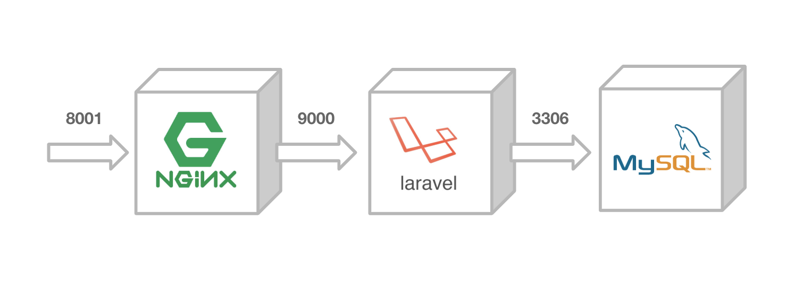
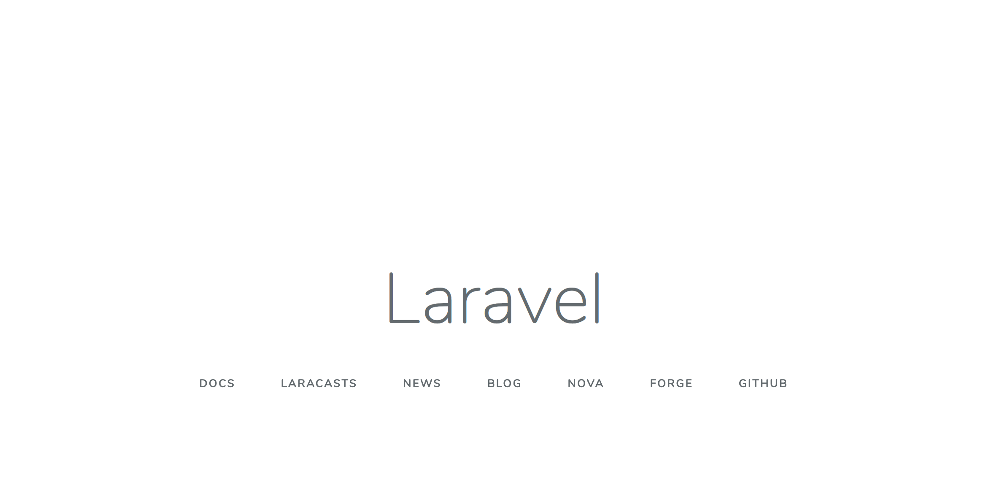
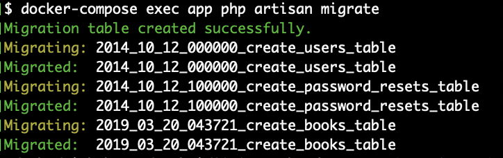

docker-composeで動作確認をする
概要¶

ECSの前に、まずはローカルでdocker-composeを用いてLaravelを動かしてみましょう
docker-compose up¶
ハンズオンのディレクトリへ移動してdocker-composeで起動してみましょう。
$ git clone https://github.com/y-ohgi/2019-aws-handson $ cd 2019-aws-handson/laravel $ docker-compose up
http://localhost:8001 へアクセスし、Laravelのウェルカムページが表示されれば成功です！

MySQLを使用する¶
LaravelとMySQLを接続します。
migrateの実行¶
起動しているdocker-composeをそのままに、別のターミナルを開いて操作します。
まずはmigrateの実行を行います。
既に起動しているDockerコンテナの中で php コマンドを打ってmigrateを行います。
$ docker-compose exec app php artisan migrate

APIの動作確認¶
まずは /api/books のパスにアクセスして、何も帰ってこないことを確認します。
$ curl localhost:8001/api/books []
何回かPOSTリクエストを送って、データを増やしてみます。
$ curl -X POST localhost:8001/api/books { "title": "tmp title", "updated_at": "2019-05-14 10:35:39", "created_at": "2019-05-14 10:35:39", "id": 1 } $ curl -X POST localhost:8001/api/books { "title": "tmp title", "updated_at": "2019-05-14 10:35:39", "created_at": "2019-05-14 10:35:39", "id": 2 }
最後に /api/books へGETリクエストを送り、MySQLへデータが格納されていることを確認します。
$ curl localhost:8001/api/books [ { "id": 1, "title": "tmp title", "created_at": "2019-05-14 10:35:34", "updated_at": "2019-05-14 10:35:34" }, { "id": 2, "title": "tmp title", "created_at": "2019-05-14 10:35:39", "updated_at": "2019-05-14 10:35:39" } ]
MySQLの中に入ってみる¶
Dockerコンテナ上で動かしているMySQLへログインしてみます。
$ docker-compose exec mysql mysql Your MySQL connection id is 8 Server version: 5.7.25 MySQL Community Server (GPL) Copyright (c) 2000, 2019, Oracle and/or its affiliates. All rights reserved. Oracle is a registered trademark of Oracle Corporation and/or its affiliates. Other names may be trademarks of their respective owners. Type 'help;' or '\h' for help. Type '\c' to clear the current input statement. mysql>
MySQLの公式Docker Image はデフォルトで mysql というデータベースが作成されます。今回は特に何も設定せず、デフォルトの mysql データベースを使用しています。
MySQLコンテナの中に入り、 mysql データベースのテーブルを一覧してみましょう。
mysql> use mysql Reading table information for completion of table and column names You can turn off this feature to get a quicker startup with -A Database changed mysql> show tables; +---------------------------+ | Tables_in_mysql | +---------------------------+ | books | | columns_priv | | db | | engine_cost | | event | | func | | general_log | | gtid_executed | | help_category | | help_keyword | | help_relation | | help_topic | | innodb_index_stats | | innodb_table_stats | | migrations | | ndb_binlog_index | | password_resets | | plugin | | proc | | procs_priv | | proxies_priv | | server_cost | | servers | | slave_master_info | | slave_relay_log_info | | slave_worker_info | | slow_log | | tables_priv | | time_zone | | time_zone_leap_second | | time_zone_name | | time_zone_transition | | time_zone_transition_type | | user | | users | +---------------------------+ 35 rows in set (0.00 sec)